DescTools is an extensive collection of miscellaneous basic statistics functions and comfort wrappers not available in the R basic system for efficient description of data. The author’s intention was to create a toolbox, which facilitates the (notoriously time consuming) first descriptive tasks in data analysis, consisting of calculating descriptive statistics, drawing graphical summaries and reporting the results. The package contains furthermore functions to produce documents using MS Word (or PowerPoint) and functions to import data from Excel.
A considerable part of the included functions can be found scattered in other packages and other sources written partly by Titans of R. The reason for collecting them here, was primarily to have them consolidated in ONE instead of dozens of packages (which themselves might depend on other packages, which are not needed at all), and to provide a common and consistent interface as far as function and arguments naming, NA handling, recycling rules etc. are concerned. Google style guides were used as naming rules (in absence of convincing alternatives). The ‘CamelStyle’ was consequently applied to functions borrowed from contributed R packages as well.
Feedback, feature requests, bugreports and other suggestions are welcome! Please report problems to Stack Overflow mentioning DescTools or directly to the maintainer.
Installation
You can install the released version of DescTools from CRAN with:
install.packages("DescTools")
And the development version from GitHub with:
if (!require("remotes")) install.packages("remotes") remotes::install_github("AndriSignorell/DescTools")
Warning
Warning: This package is still under development. Although the code seems meanwhile quite stable, until release of version 1.0 (which is expected in hmm: spring 2019? … you don’t believe it anymore?) you should be aware that everything in the package might be subject to change. Backward compatibility is not yet guaranteed. Functions may be deleted or renamed and new syntax may be inconsistent with earlier versions. By release of version 1.0 the “deprecated-defunct process” will be installed.
Examples
library(DescTools)
Demo “describe”
demo(describe, package = "DescTools") #> #> #> demo(describe) #> ---- ~~~~~~~~ #> #> > ## ----------------------------------------------------------------------------------- #> > ## Demo file for DescTools; start with 'demo(DescTools)' #> > ## ----------------------------------------------------------------------------------- #> > #> > #> > # Descriptions ************** #> > # use a subset of built-in data.frame #> > d.sub <- d.pizza[,c("temperature","driver","delivery_min","count","operator","date","wine_ordered")] #> #> > # all univariate descriptions #> > Desc(d.sub, plotit=TRUE) #> ------------------------------------------------------------------------------ #> Describe d.sub (data.frame): #> #> data frame: 1209 obs. of 7 variables #> 1116 complete cases (92.3%) #> #> Nr ColName Class NAs Levels #> 1 temperature numeric 39 (3.2%) #> 2 driver factor 5 (0.4%) (7): 1-Butcher, 2-Carpenter, #> 3-Carter, 4-Farmer, 5-Hunter, ... #> 3 delivery_min numeric . #> 4 count integer 12 (1.0%) #> 5 operator factor 8 (0.7%) (3): 1-Allanah, 2-Maria, 3-Rhonda #> 6 date Date 32 (2.6%) #> 7 wine_ordered integer 12 (1.0%) #> #> #> ------------------------------------------------------------------------------ #> 1 - temperature (numeric) #> #> length n NAs unique 0s mean meanCI' #> 1'209 1'170 39 375 0 47.937 47.367 #> 96.8% 3.2% 0.0% 48.507 #> #> .05 .10 .25 median .75 .90 .95 #> 26.700 33.290 42.225 50.000 55.300 58.800 60.500 #> #> range sd vcoef mad IQR skew kurt #> 45.500 9.938 0.207 9.192 13.075 -0.842 0.051 #> #> lowest : 19.3, 19.4, 20.0, 20.2 (2), 20.35 #> highest: 63.8, 64.1, 64.6, 64.7, 64.8 #> #> ' 95%-CI (classic)
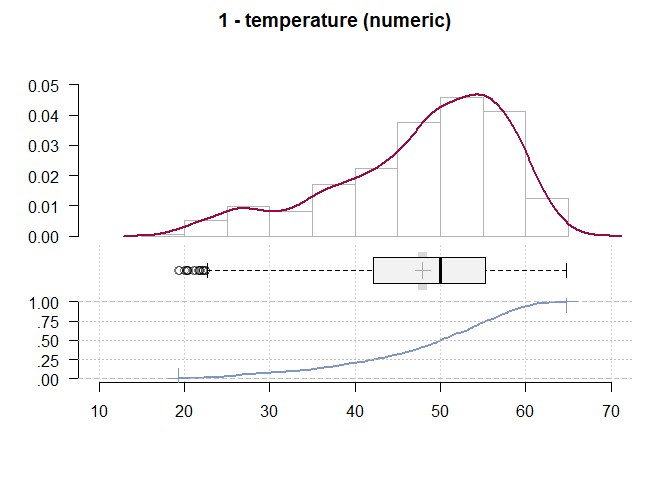
#> ------------------------------------------------------------------------------
#> 2 - driver (factor)
#>
#> length n NAs unique levels dupes
#> 1'209 1'204 5 7 7 y
#> 99.6% 0.4%
#>
#> level freq perc cumfreq cumperc
#> 1 Carpenter 272 22.6% 272 22.6%
#> 2 Carter 234 19.4% 506 42.0%
#> 3 Taylor 204 16.9% 710 59.0%
#> 4 Hunter 156 13.0% 866 71.9%
#> 5 Miller 125 10.4% 991 82.3%
#> 6 Farmer 117 9.7% 1'108 92.0%
#> 7 Butcher 96 8.0% 1'204 100.0%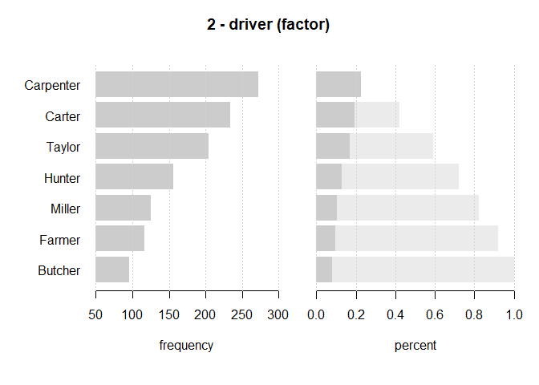
#> ------------------------------------------------------------------------------
#> 3 - delivery_min (numeric)
#>
#> length n NAs unique 0s mean meanCI'
#> 1'209 1'209 0 384 0 25.65 25.04
#> 100.0% 0.0% 0.0% 26.26
#>
#> .05 .10 .25 median .75 .90 .95
#> 10.40 11.60 17.40 24.40 32.50 40.42 45.20
#>
#> range sd vcoef mad IQR skew kurt
#> 56.80 10.84 0.42 11.27 15.10 0.61 0.10
#>
#> lowest : 8.8 (3), 8.9, 9.0 (3), 9.1 (5), 9.2 (3)
#> highest: 61.9, 62.7, 62.9, 63.2, 65.6
#>
#> ' 95%-CI (classic)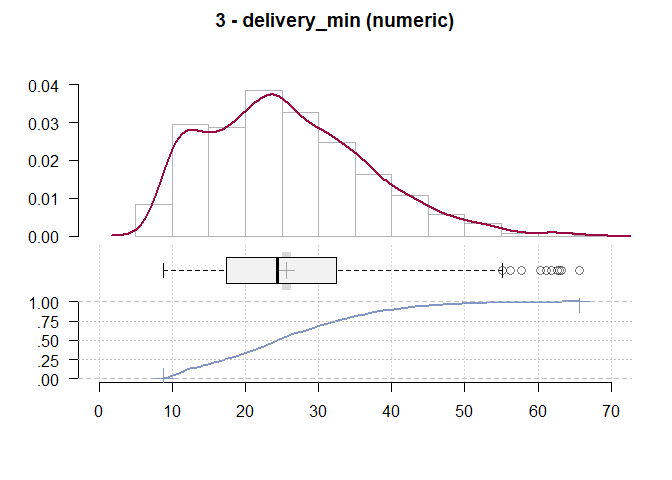
#> ------------------------------------------------------------------------------
#> 4 - count (integer)
#>
#> length n NAs unique 0s mean meanCI'
#> 1'209 1'197 12 8 0 3.44 3.36
#> 99.0% 1.0% 0.0% 3.53
#>
#> .05 .10 .25 median .75 .90 .95
#> 1.00 2.00 2.00 3.00 4.00 6.00 6.00
#>
#> range sd vcoef mad IQR skew kurt
#> 7.00 1.56 0.45 1.48 2.00 0.45 -0.36
#>
#>
#> level freq perc cumfreq cumperc
#> 1 1 108 9.0% 108 9.0%
#> 2 2 259 21.6% 367 30.7%
#> 3 3 300 25.1% 667 55.7%
#> 4 4 240 20.1% 907 75.8%
#> 5 5 152 12.7% 1'059 88.5%
#> 6 6 97 8.1% 1'156 96.6%
#> 7 7 34 2.8% 1'190 99.4%
#> 8 8 7 0.6% 1'197 100.0%
#>
#> heap(?): remarkable frequency (25.1%) for the mode(s) (= 3)
#>
#> ' 95%-CI (classic)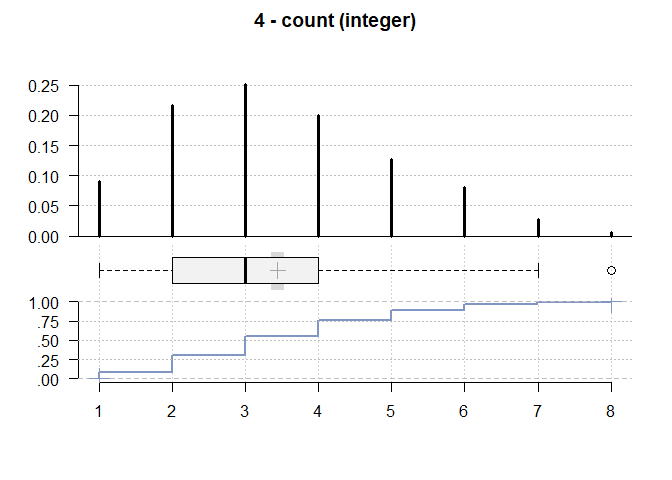
#> ------------------------------------------------------------------------------
#> 5 - operator (factor)
#>
#> length n NAs unique levels dupes
#> 1'209 1'201 8 3 3 y
#> 99.3% 0.7%
#>
#> level freq perc cumfreq cumperc
#> 1 Rhonda 446 37.1% 446 37.1%
#> 2 Maria 388 32.3% 834 69.4%
#> 3 Allanah 367 30.6% 1'201 100.0%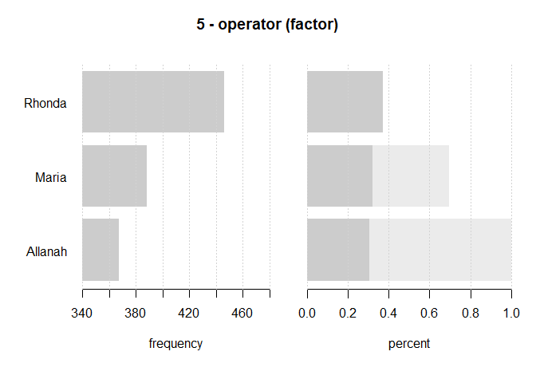
#> ------------------------------------------------------------------------------
#> 6 - date (Date)
#>
#> length n NAs unique
#> 1'209 1'177 32 31
#> 97.4% 2.6%
#>
#> lowest : 2014-03-01 (42), 2014-03-02 (46), 2014-03-03 (26), 2014-03-04 (19)
#> highest: 2014-03-28 (46), 2014-03-29 (53), 2014-03-30 (43), 2014-03-31 (34)
#>
#>
#> Weekday:
#>
#> Pearson's Chi-squared test (1-dim uniform):
#> X-squared = 78.879, df = 6, p-value = 6.09e-15
#>
#> level freq perc cumfreq cumperc
#> 1 Monday 144 12.2% 144 12.2%
#> 2 Tuesday 117 9.9% 261 22.2%
#> 3 Wednesday 134 11.4% 395 33.6%
#> 4 Thursday 147 12.5% 542 46.0%
#> 5 Friday 171 14.5% 713 60.6%
#> 6 Saturday 244 20.7% 957 81.3%
#> 7 Sunday 220 18.7% 1'177 100.0%
#>
#> Months:
#>
#> Pearson's Chi-squared test (1-dim uniform):
#> X-squared = 12947, df = 11, p-value < 2.2e-16
#>
#> level freq perc cumfreq cumperc
#> 1 January 0 0.0% 0 0.0%
#> 2 February 0 0.0% 0 0.0%
#> 3 March 1'177 100.0% 1'177 100.0%
#> 4 April 0 0.0% 1'177 100.0%
#> 5 May 0 0.0% 1'177 100.0%
#> 6 June 0 0.0% 1'177 100.0%
#> 7 July 0 0.0% 1'177 100.0%
#> 8 August 0 0.0% 1'177 100.0%
#> 9 September 0 0.0% 1'177 100.0%
#> 10 October 0 0.0% 1'177 100.0%
#> 11 November 0 0.0% 1'177 100.0%
#> 12 December 0 0.0% 1'177 100.0%
#>
#> By days :
#>
#> level freq perc cumfreq cumperc
#> 1 2014-03-01 42 3.6% 42 3.6%
#> 2 2014-03-02 46 3.9% 88 7.5%
#> 3 2014-03-03 26 2.2% 114 9.7%
#> 4 2014-03-04 19 1.6% 133 11.3%
#> 5 2014-03-05 33 2.8% 166 14.1%
#> 6 2014-03-06 39 3.3% 205 17.4%
#> 7 2014-03-07 44 3.7% 249 21.2%
#> 8 2014-03-08 55 4.7% 304 25.8%
#> 9 2014-03-09 42 3.6% 346 29.4%
#> 10 2014-03-10 26 2.2% 372 31.6%
#> 11 2014-03-11 34 2.9% 406 34.5%
#> 12 2014-03-12 36 3.1% 442 37.6%
#> 13 2014-03-13 35 3.0% 477 40.5%
#> 14 2014-03-14 38 3.2% 515 43.8%
#> 15 2014-03-15 48 4.1% 563 47.8%
#> 16 2014-03-16 47 4.0% 610 51.8%
#> 17 2014-03-17 30 2.5% 640 54.4%
#> 18 2014-03-18 32 2.7% 672 57.1%
#> 19 2014-03-19 31 2.6% 703 59.7%
#> 20 2014-03-20 36 3.1% 739 62.8%
#> 21 2014-03-21 43 3.7% 782 66.4%
#> 22 2014-03-22 46 3.9% 828 70.3%
#> 23 2014-03-23 42 3.6% 870 73.9%
#> 24 2014-03-24 28 2.4% 898 76.3%
#> 25 2014-03-25 32 2.7% 930 79.0%
#> 26 2014-03-26 34 2.9% 964 81.9%
#> 27 2014-03-27 37 3.1% 1'001 85.0%
#> 28 2014-03-28 46 3.9% 1'047 89.0%
#> 29 2014-03-29 53 4.5% 1'100 93.5%
#> 30 2014-03-30 43 3.7% 1'143 97.1%
#> 31 2014-03-31 34 2.9% 1'177 100.0%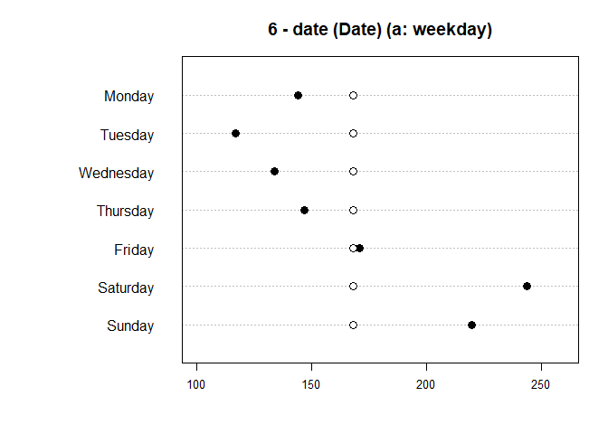 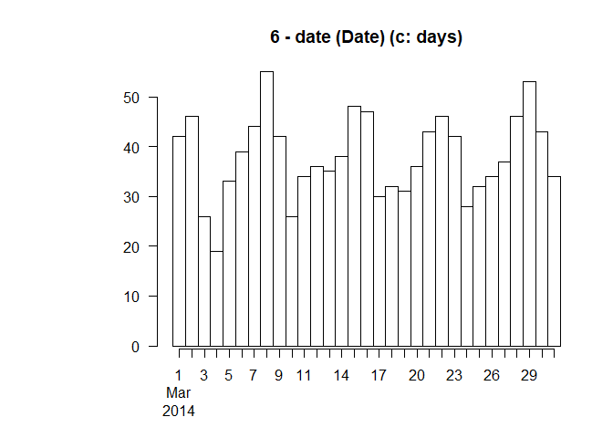
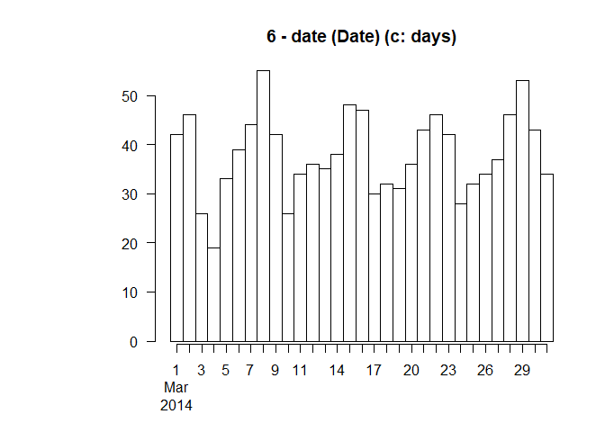
#> ------------------------------------------------------------------------------
#> 7 - wine_ordered (integer - dichotomous)
#>
#> length n NAs unique
#> 1'209 1'197 12 2
#> 99.0% 1.0%
#>
#> freq perc lci.95 uci.95'
#> 0 1'010 84.4% 82.2% 86.3%
#> 1 187 15.6% 13.7% 17.8%
#>
#> ' 95%-CI (Wilson)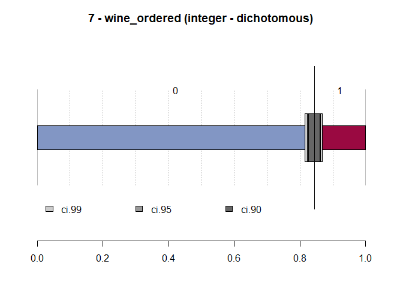
#>
#> > # just a few groupwise descriptions on the console
#> > Desc(temperature ~ driver, d.pizza, plotit=TRUE)
#> ------------------------------------------------------------------------------
#> temperature ~ driver (d.pizza)
#>
#> Summary:
#> n pairs: 1'209, valid: 1'166 (96.4%), missings: 43 (3.6%), groups: 7
#>
#>
#> Butcher Carpenter Carter Farmer Hunter Miller
#> mean 49.617 43.493 50.419 50.937 52.141 47.524
#> median 51.400 44.800 51.750 54.100 55.100 49.600
#> sd 8.787 9.407 8.467 9.024 8.885 8.935
#> IQR 11.975 12.500 11.325 11.200 11.575 8.800
#> n 96 253 226 117 156 121
#> np 8.233% 21.698% 19.383% 10.034% 13.379% 10.377%
#> NAs 0 19 8 0 0 4
#> 0s 0 0 0 0 0 0
#>
#> Taylor
#> mean 45.091
#> median 48.500
#> sd 11.442
#> IQR 18.400
#> n 197
#> np 16.895%
#> NAs 7
#> 0s 0
#>
#> Kruskal-Wallis rank sum test:
#> Kruskal-Wallis chi-squared = 141.93, df = 6, p-value < 2.2e-16
#> Warning:
#> Grouping variable contains 5 NAs (0.414%).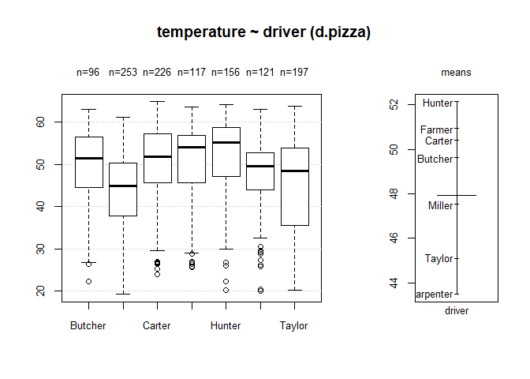
#>
#> > Desc(driver ~ temperature, d.pizza, plotit=TRUE)
#> ------------------------------------------------------------------------------
#> driver ~ temperature (d.pizza)
#>
#> Summary:
#> n pairs: 1'209, valid: 1'166 (96.4%), missings: 43 (3.6%), groups: 7
#>
#>
#> Butcher Carpenter Carter Farmer Hunter Miller
#> mean 49.617 43.493 50.419 50.937 52.141 47.524
#> median 51.400 44.800 51.750 54.100 55.100 49.600
#> sd 8.787 9.407 8.467 9.024 8.885 8.935
#> IQR 11.975 12.500 11.325 11.200 11.575 8.800
#> n 96 253 226 117 156 121
#> np 8.233% 21.698% 19.383% 10.034% 13.379% 10.377%
#> NAs 0 19 8 0 0 4
#> 0s 0 0 0 0 0 0
#>
#> Taylor
#> mean 45.091
#> median 48.500
#> sd 11.442
#> IQR 18.400
#> n 197
#> np 16.895%
#> NAs 7
#> 0s 0
#>
#> Kruskal-Wallis rank sum test:
#> Kruskal-Wallis chi-squared = 141.93, df = 6, p-value < 2.2e-16
#> Warning:
#> Grouping variable contains 5 NAs (0.414%).
#>
#>
#>
#> Proportions of driver in the quantiles of temperature:
#>
#> Q1 Q2 Q3 Q4
#> Butcher 6.8% 8.1% 7.3% 10.7%
#> Carpenter 34.9% 28.8% 15.9% 6.9%
#> Carter 13.7% 18.3% 21.1% 24.5%
#> Farmer 6.5% 4.7% 14.9% 14.1%
#> Hunter 7.5% 9.5% 11.8% 24.8%
#> Miller 9.2% 12.9% 13.1% 6.2%
#> Taylor 21.2% 17.6% 15.9% 12.8%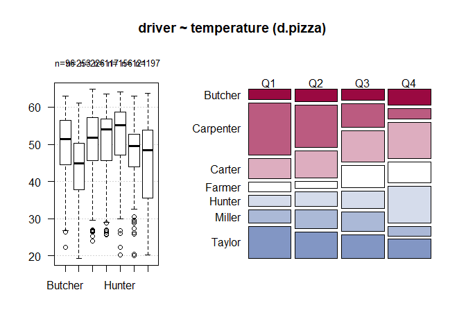
#>
#> > Desc(temperature ~ delivery_min, d.pizza, plotit=TRUE)
#> ------------------------------------------------------------------------------
#> temperature ~ delivery_min (d.pizza)
#>
#> Summary:
#> n pairs: 1'209, valid: 1'170 (96.8%), missings: 39 (3.2%)
#>
#>
#> Pearson corr. : -0.575
#> Spearman corr.: -0.573
#> Kendall corr. : -0.422
#>
#> > Desc(quality ~ driver, d.pizza, plotit=TRUE, rfrq=("111")) # show all rel. frequencies
#> ------------------------------------------------------------------------------
#> quality ~ driver (d.pizza)
#> Error in strsplit(rfrq, NULL): non-character argument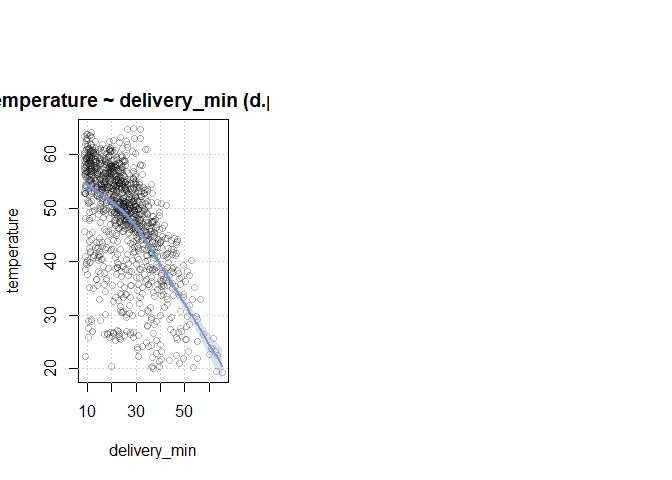
Demo “plots”
demo(plots, package = "DescTools") #> #> #> demo(plots) #> ---- ~~~~~ #> #> > ## ----------------------------------------------------------------------------------- #> > ## Demo file for plots; start with 'demo(plots)' #> > ## ----------------------------------------------------------------------------------- #> > #> > #> > tab <- matrix(c(2,5,8,3,10,12,5,7,15), nrow=3, byrow=FALSE, #> + dimnames = list(c("A","B","C"), c("D","E","F")) ) #> #> > par(mfrow=c(1,1), xpd=TRUE) #> #> > PlotCirc( tab, #> + acol = c("dodgerblue","seagreen2","limegreen","olivedrab2","goldenrod2","tomato2"), #> + rcol = SetAlpha(c("red","orange","olivedrab1"), 0.5) #> + )
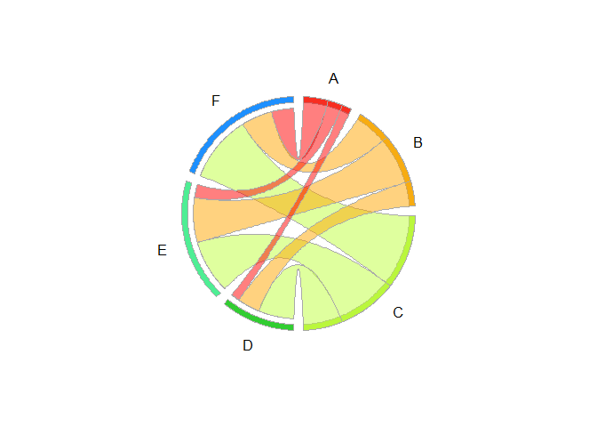
#>
#> > # distribution plot (combination of histogram, densitycurve, boxplot and ecdf.plot)
#> > old.par <- par(no.readonly=TRUE)
#>
#> > PlotFdist(x=d.pizza$delivery_min, na.rm=TRUE)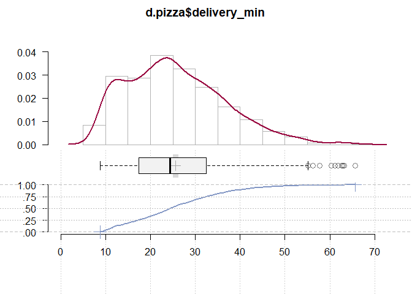
#>
#> > # plot multiple density curves
#> > par(old.par)
#>
#> > PlotMultiDens( split(d.pizza$delivery_min, d.pizza$driver), na.rm=TRUE
#> + , main="delivery time ~ driver", xlab="delivery time [min]", ylab="density"
#> + , panel.first=grid())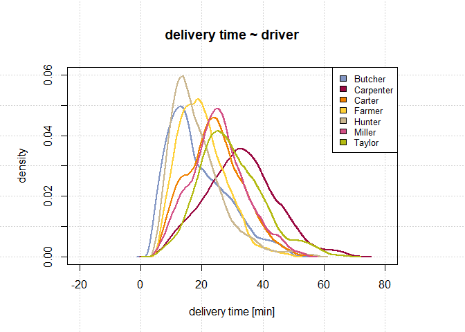
#>
#> > # areaplot with stapled areas
#> > tab <- table( d.pizza$date, d.pizza$driver )
#>
#> > PlotArea(x=as.Date(rownames(tab)), y=tab, xaxt="n", xlab="Date", ylab="Pizzas delivered" )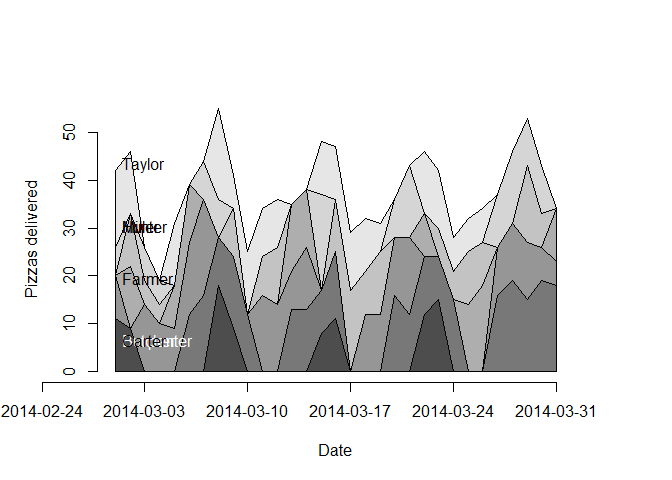
#>
#> > # add x-axis and some text labels
#> > xrng <- pretty(range(as.Date(rownames(tab))))
#>
#> > axis(side=1, at=xrng, labels=xrng)
#>
#> > text( x=min(d.pizza$date + .5, na.rm=TRUE), y=cumsum(tab[2,])-2.5,
#> + label=levels(d.pizza$driver), adj=c(0,0.5), col=TextContrastColor( gray.colors(7)))
#>
#> > # dotchart with confidence intervals
#> > x <- do.call("rbind", tapply( d.pizza$temperature, d.pizza$driver, MeanCI, na.rm=TRUE))
#>
#> > rownames(x) <- levels(d.pizza$driver)
#>
#> > PlotDot(x)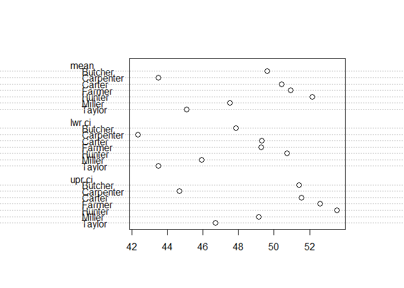
#>
#> > # Plot pyramid
#> > xy.pop <- c(3.2,3.5,3.6,3.6,3.5,3.5,3.9,3.7,3.9,3.5,3.2,2.8,2.2,1.8,1.5,1.3,0.7,0.4)
#>
#> > xx.pop <- c(3.2,3.4,3.5,3.5,3.5,3.7,4,3.8,3.9,3.6,3.2,2.5,2,1.7,1.5,1.3,1,0.8)
#>
#> > agelabels <- c("0-4","5-9","10-14","15-19","20-24","25-29","30-34","35-39","40-44",
#> + "45-49","50-54","55-59","60-64","65-69","70-74","75-79","80-44","85+")
#>
#> > PlotPyramid( xy.pop, xx.pop, ylab=agelabels, lxlab="men", rxlab="women",
#> + main="Australian population pyramid 2002", col=PalHelsana()[c(6,1)])
#> Error in PalHelsana(): could not find function "PalHelsana"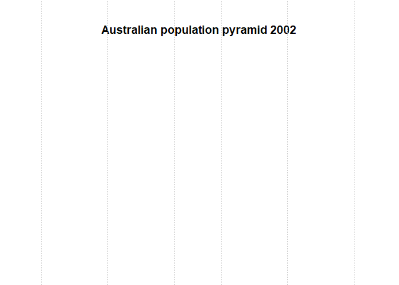